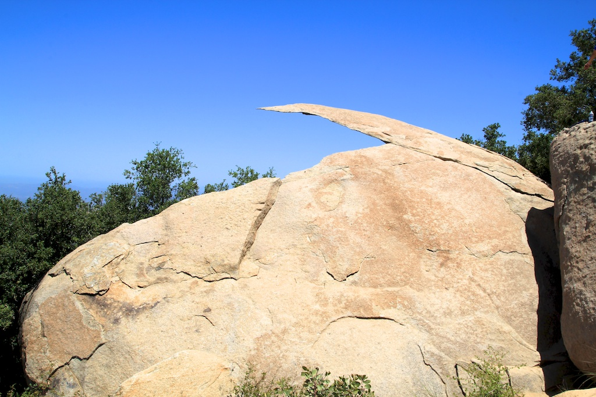
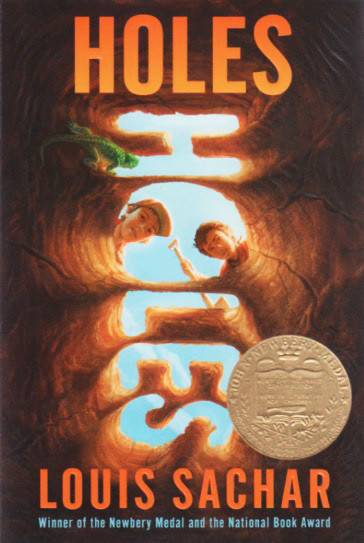

About L.J.
"There is a powerful force unleashed when young people resolve to make a change."
Interests

My interests stem from my love for space. I believe there is no better way to spend my time than learning about rockets and exoplanets. Just last month, I got Neil deGrasse Tyson's signature at his talk on The Search for Life in the Universe . The entire experience was amazing. Something else I am interested in is English. I believe English is a necessary skill for anyone looking to lead a successful career, so I make sure to read at least one book every month to prepare.
Hobbies

My hobbies are mostly outdoor focused. For example, when I had the chance to go biking last weekend, I said yes immediately. There is nothing like spending a weekend hiking and biking on the side of a San Diego mountain. One of the places that represents that adventurous side of me is Potato Chip Rock . Another thing I love doing outdoors is playing soccer with my friends. Even though I do not play competitively, it is still great to step away from schoolwork and focus on getting the ball into the net every once in a while.
Favorites

I have many favorite things that I have picked out throughout my life, because sometimes there is nothing to do besides rank every movie I have ever watched. To start off, my favorite book is Holes by Louis Sachar because, though it is short, it is one of the best examples of writing that pulls readers in, which is something I aspire to do in my own work. Next, my favorite movie is The Godfather . Although the second movie is often praised as the best, I still believe the first movie is strongest because it brings out complex emotions and ideas that few other movies can match. Lastly, my favorite sport is track and field. I first discovered track and field in high school, and once I joined, I realized that the sport brings out the best in us, which is one of the main reasons I have stayed with it.